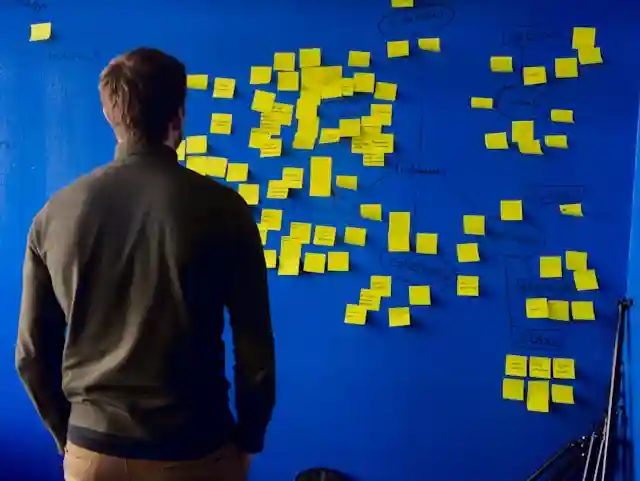

First time here?
You may refer to this short article explaining how to use the website and find the content most relevant to you. Read the guide

Rigorous Research
Robust Data Analysis
Compassionate Teaching
Note on Affiliations: The inclusion of any university, publisher, hospital, employer, or other organization on this website is intended solely to indicate relevant affiliations, qualifications, or credentials and should not be construed as an endorsement by, or representation of, that institution. This personal website is an independent professional portfolio. All views, opinions, data analyses, and statements expressed here are solely my own and do not represent, reflect, are sponsored by, endorsed by, monitored by, or entail any form of official relation to any academic institution, university, hospital, publisher, or organization where I have studied, worked, or been affiliated with in the past, present, or future. Content on this site is for informational purposes only and does not constitute official medical advice, professional guidance, or institutional representation.
Read moreThis website is currently undergoing maintenance and updates. Some content may be temporarily unavailable, and some features may not function as expected. I expect to finalize the updates within a few weeks. Thank you for your understanding.

With a Phd in Health Science and Nursing, I am dedicated to bridging the gap between complex medical data and actionable clinical insights. My work focuses on gerontology, critical care, and research integrity, and I am passionate about training the next generation of evidence-based practitioners.
You may refer to this short article explaining how to use the website and find the content most relevant to you. Read the guide
Use the website search function to find publications, articles, research topics, and other content. Open search
You may contact me using the contact icon in the top-right corner or through the contact page. Contact me
The ideas and commitments that shape how I understand my work and translate it into meaningful action.
I believe meaningful progress in healthcare begins with thoughtful questions, interdisciplinary thinking, and a commitment to seeing both evidence and people in context.
My mission is to generate reliable knowledge, strengthen healthcare practice, and support learning that improves outcomes for patients, professionals, and communities.

I combine rigorous inquiry, clear analysis, compassionate teaching, and collaboration to turn complex challenges into practical and understandable opportunities for improvement.
The principles that guide how I approach research, teaching, collaboration, and healthcare improvement.
I approach every project with honesty, intellectual responsibility, and respect for evidence, people, and professional standards.

I focus on work that moves beyond discussion, translating knowledge and analysis into meaningful improvements in practice and outcomes.
I aim to encourage curiosity, confidence, and constructive action by sharing ideas that help people see new possibilities for healthcare and learning.
Explore my core areas of expertise
I conduct healthcare research through a comprehensive lifecycle approach that integrates rigor, integrity, and real-world relevance. My work combines diverse methodologies, strong statistical expertise, and international collaboration to address complex challenges. I contribute not only to producing high quality research but also to advancing the broader scientific ecosystem.

I deliver teaching that is inclusive, adaptable, and grounded in real world healthcare practice. My approach integrates interdisciplinary thinking, evidence based learning, and strong support for individual learner needs. I aim to develop confident, competent professionals who can work effectively across diverse and complex environments.

I transform data into meaningful insights through strong statistical analysis and deep healthcare understanding. My work integrates quantitative and qualitative approaches to reflect real world complexity. I deliver clear, actionable results that support informed decisions while maintaining the highest ethical standards.
Quick links to main pages
Cannot find what you are looking for or have a question?
Use the central search option on the top right corner or feel free to contact me